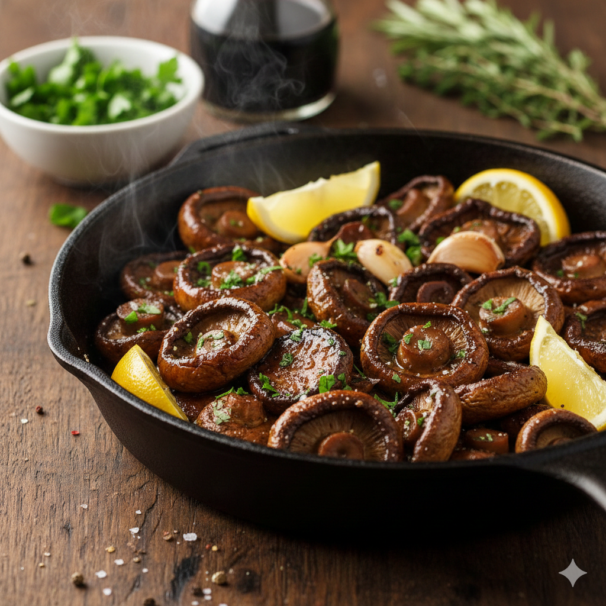

Home
Roasted Mushroom

Description
Roasted mushrooms are a fantastic "umami bomb" that can serve as a meaty side dish or a topping for steak, pasta, or polenta. The key to perfect roasted mushrooms is high heat and not crowding the pan—this ensures they brown and crisp rather than steam.
Ingredients
- Mushrooms
- Oil
- Acid
- Aromatics
- Seasoning
Steps
- Prep: Preheat your oven to 400°F (200°C). Wipe the mushrooms clean with a damp paper towel (don't soak them, or they’ll get soggy).
- Toss: In a large bowl, toss the mushrooms with the oil, balsamic vinegar, garlic, and herbs. Season generously with salt and pepper.
- Arrange: Spread them out on a large rimmed baking sheet. Crucial Tip: Make sure they are in a single layer with space between them. If they touch too much, they will release water and boil instead of roasting.
- Roast: Bake for 20–25 minutes, tossing once halfway through. They are done when they are shrunken, browned, and slightly crisp on the edges.
- Finish: Remove from the oven and immediately toss with fresh parsley and an optional squeeze of lemon to brighten the earthy flavors.
Congrats! You have your lovely roasted mushroom!